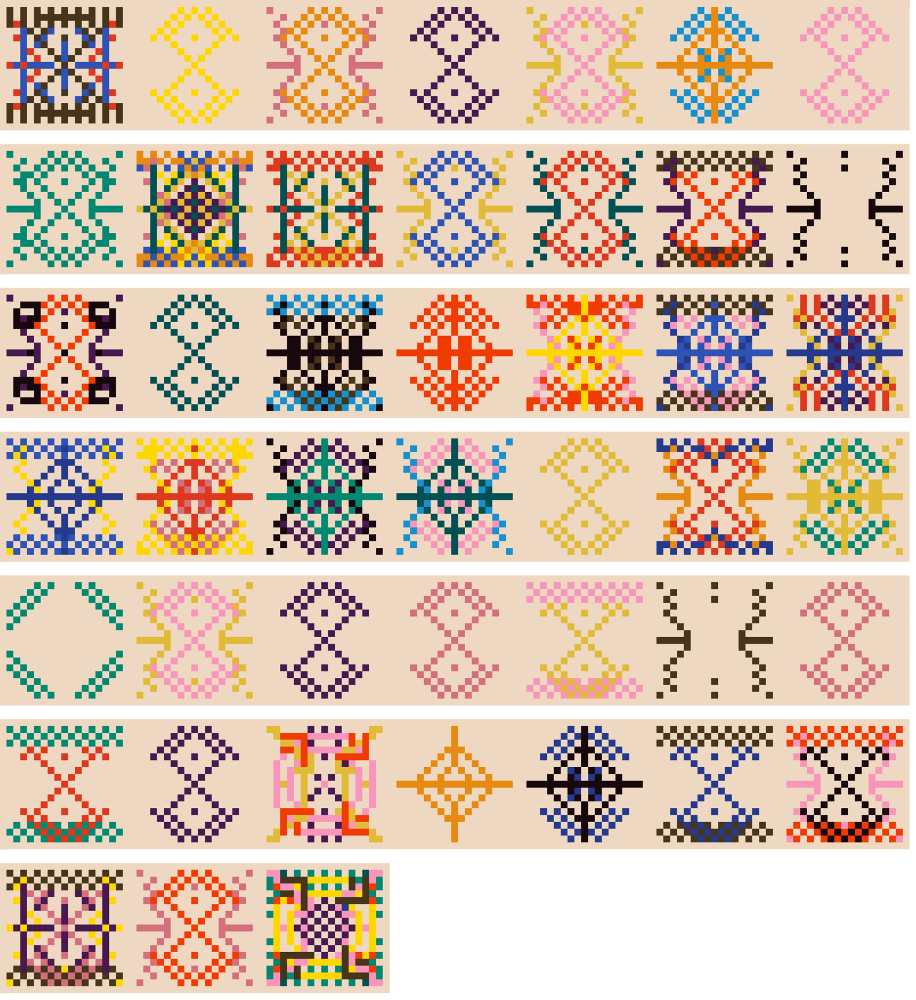
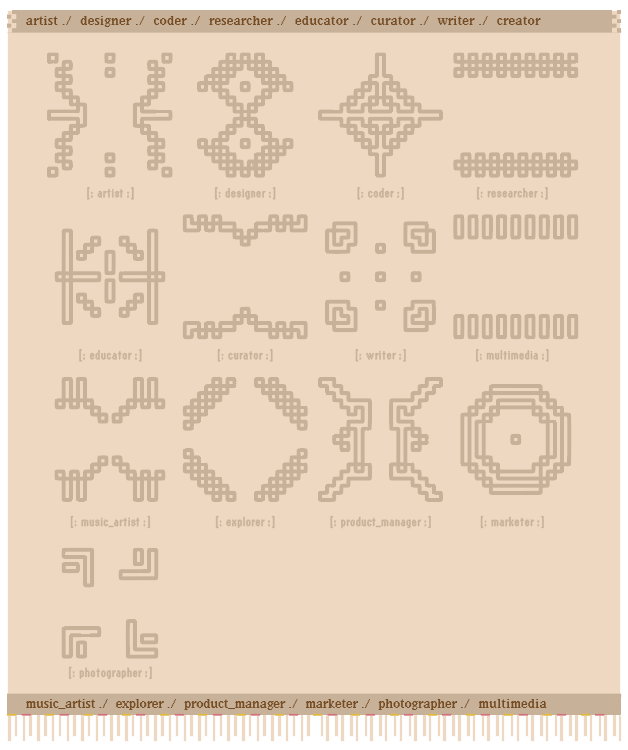
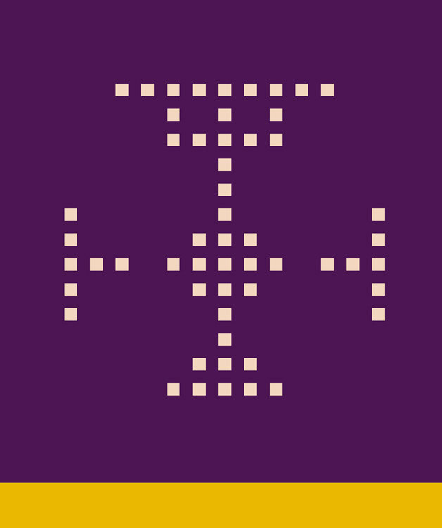
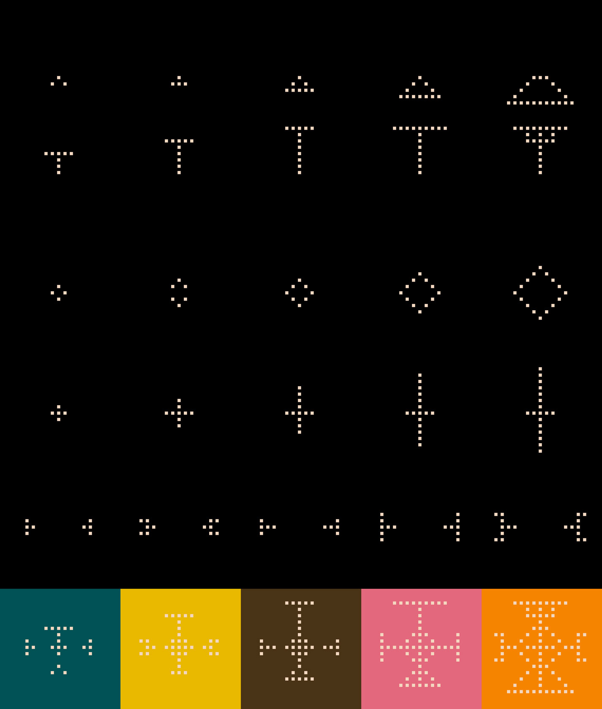
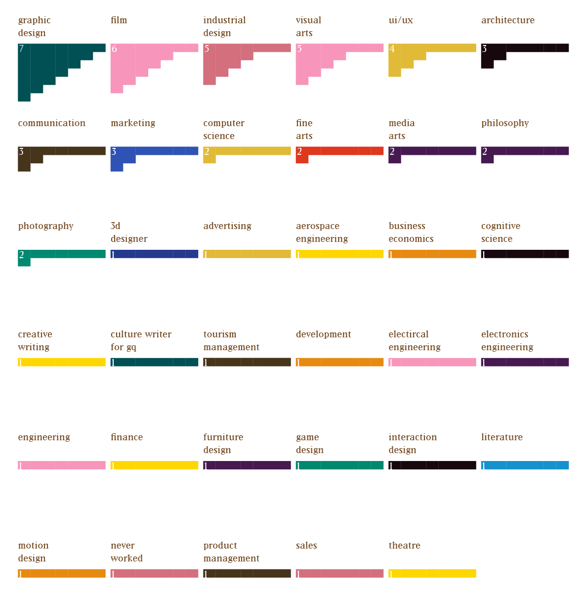

What Are The Patterns?
Every card is generated from each person's unique data and consists of two parts, a label, and a dimension scale.
The label represents their self-identified labels, some people have only one label while others have many.
There are a total of ten different labels, each being illustrated below:
On the other hand, the dimension scales are generated from the following five questions, I asked people to self evaluate on a scale of 1-5:
- How experienced are you in building something physical?
- How digital intensive are you?
- Are you more of a coding hacker or a software geek?
- Do you think of yourself as a research person or making person when you start a project?
- Do you prefer to do an individual project or collaborative project more?
These five scales are then translated to this designed icon where every part represents a different dimension.
Each person's icon is based on their different 5 dimensions of scale. For instance, a person can be very confident in building something physical (5), while also good at making digital designs (5). This person is a software geek (4), always starts a project with research (1), and is always into collaboration. (5) Based on these traits, this person will have an array of traits that is [5, 5, 4, 1, 5].
The above diagram shows how the answers to 5 questions would affect the final generated design. With each row of icons corresponding to each question.
What Are People's Background?
Based on our research, the top five most common academic or working backgrounds DT people have are graphic design, film, industrial design, visual arts, and UI/UX.
Out of 45 people, there are 35 different backgrounds, with a wide range of science, business, and engineering-related fields. Some people have multiple backgrounds, possibly from having a dual degree, a minor, or working experience.
Who Are Everyone's Favorite Inspirations or Personal Heros?
We asked people to name some of their favorite artists, designers, creative practitioners, or personal heroes and we got a wide range of interesting inspiring people listed here:
You can click into any of them to find out more about their works and philosophies.
- Emily Oberman
- James Turrell
- Studio Drift
- Joonmoe
- Mark Ryden
- Nick Cave (soundsuits)
- Gwen John
- Matthew Barney
- Daito Manabe
- Dieter Rams
- Giorgia Lupi
- Milton Glaser
- Chino Kim
- Jonathan Thirkield
- Wave VR
- The Pudding
- Reza Ali
- Synthestruct
- Sultan+Shepard
- Neri Oxman
- Wassily Kandinsky
- Olafur Eliasson
- SosoLimited
- Daniel Arsham
- Annie Leibovitz
- Courtney Mattison
- Zhou Yijun
- O.OO
- Beth Cavener
- Toby Fox
- Alexander Calder
- Guoqiang Cai
- Metahaven
- Hito Steyerl
- Lucy Hardcastle
- Simone Rebaudengo
- Ragnar Kjartansson
- Patrick Demarchelier
- Fons Mans
- Paula Scher
- Banksy
- Naoto Fukasawa
- The Weeknd
- Pauline Saglio
- Dunne and Raby
- Henrietta Harris
Most of them are visual artists and designers working with technology, but we also get war reporters, contemporary artists, graphic designers, painters, activist groups, and models. It's hard to describe and analyze these data but by collecting images of their work online, I was able to generate this poster that sort of visualizes people's interests.
You can play with this auto-layout generator and make your own poster of the DT inspiration board.
What Skills Are Most Popular In DT?
We also asked people to name some of the skills they have and they imagine their soulmate might have, such as illustrator, p5.js, or touch designer. In the below interactive chart we illustrated them in circles and squares.
Square means that this person has the listed skill. Circle means that they wish their soulmate has the skill. Some skills might be empty while some might have both.
Square means that this person has the listed skill. Circle means that they wish their soulmate has the skill. Some skills might be empty while some might have both.